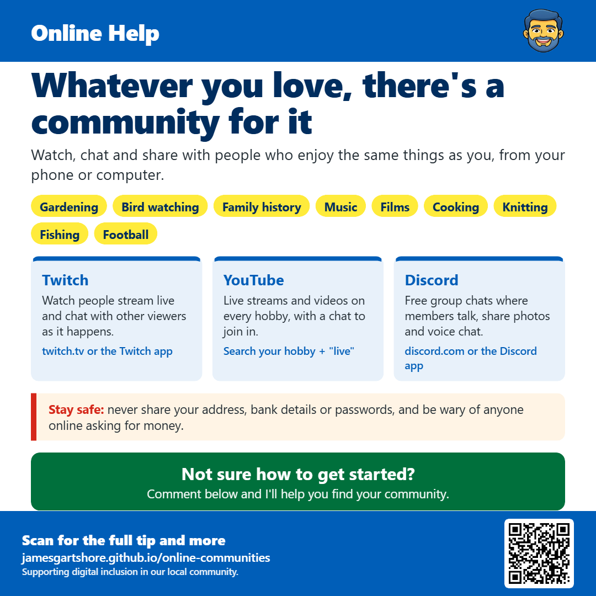

Whatever you love, there's a community for it
In short
- Twitch: Watch people stream live and chat with other viewers as it happens. (twitch.tv or the Twitch app)
- YouTube: Live streams and videos on every hobby, with a chat to join in. (Search your hobby + "live")
- Discord: Free group chats where members talk, share photos and voice chat. (discord.com or the Discord app)

Hi everyone, I wanted to share something that a lot of people don't realise is out there.
Whatever you're into, whether it's gardening, bird watching, family history, music, films, cooking, knitting, fishing or football, there's almost certainly an online community of people who love the same thing. It's a great way to learn something new, have a chat, and feel part of something, especially if you live alone or can't get out as much as you'd like.
Twitch (twitch.tv) is a website and app where people stream live, and everyone watching can chat together in a box beside the video. It's not just gaming. There are live bird feeder cameras, people gardening, cooking, painting and much more. YouTube works in a similar way. As well as normal videos, lots of people do live streams with a chat alongside. Just search for your hobby with the word "live" after it, like "bird watching live".
Discord is a free app for group chats, called servers. Each server is like a club for a particular interest, where members post messages and photos, and can even join voice chats to talk. Many streamers and YouTubers have their own Discord server, and you'll usually find an invite link under their videos or streams.
All three are free to use. You'll need to create an account if you want to chat, but you can just watch for as long as you like first to get a feel for it. Nobody minds people who just watch, and plenty of people do.
As with anything online, keep yourself safe. Never share your address, bank details or passwords, and be wary of anyone who moves the conversation to private messages and then starts asking for money or gift cards, however friendly they seem.
If you'd like help getting started or finding a community for your hobby, just comment below and I'll do my best to help.
I hope this helps, and feel free to pass it on to anyone who might find it useful.
Want more tips like this? Get my new tips by email. It's free, and you can stop any time.